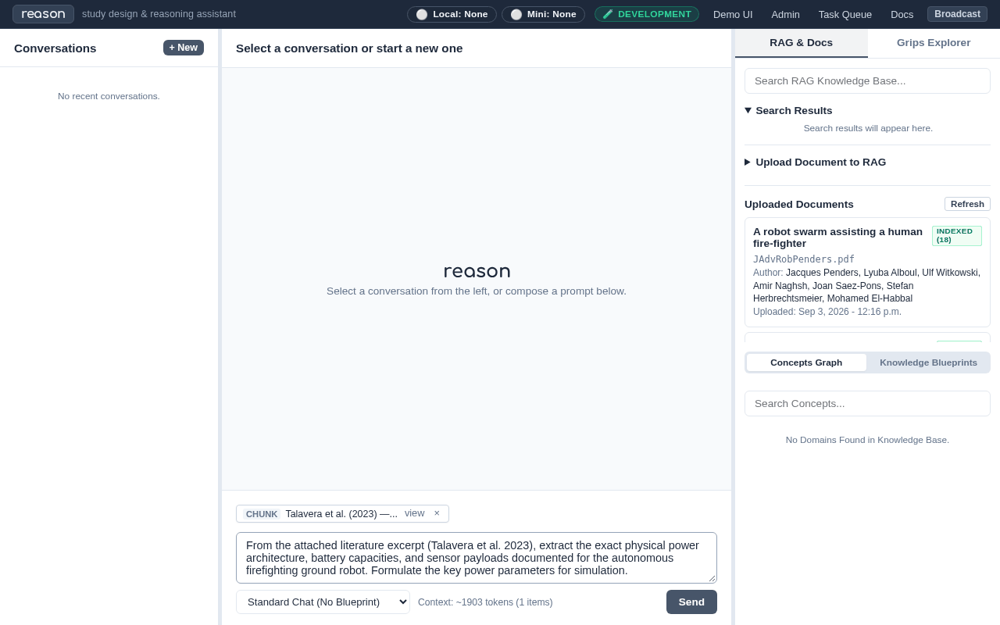
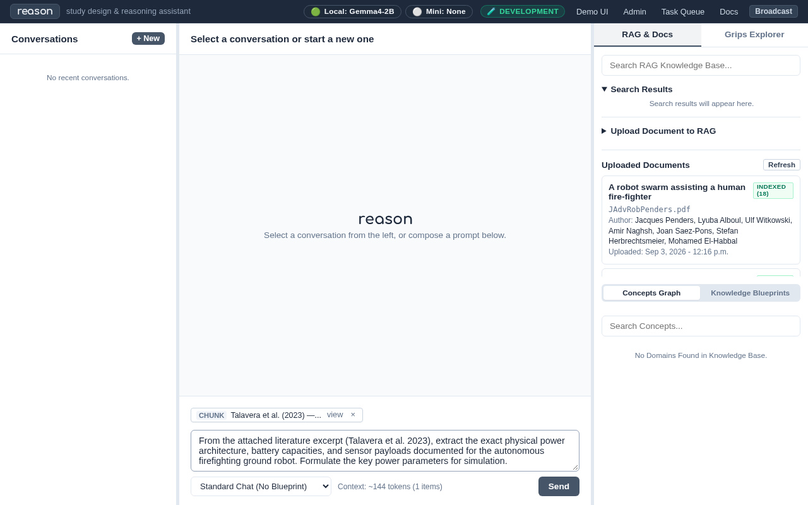
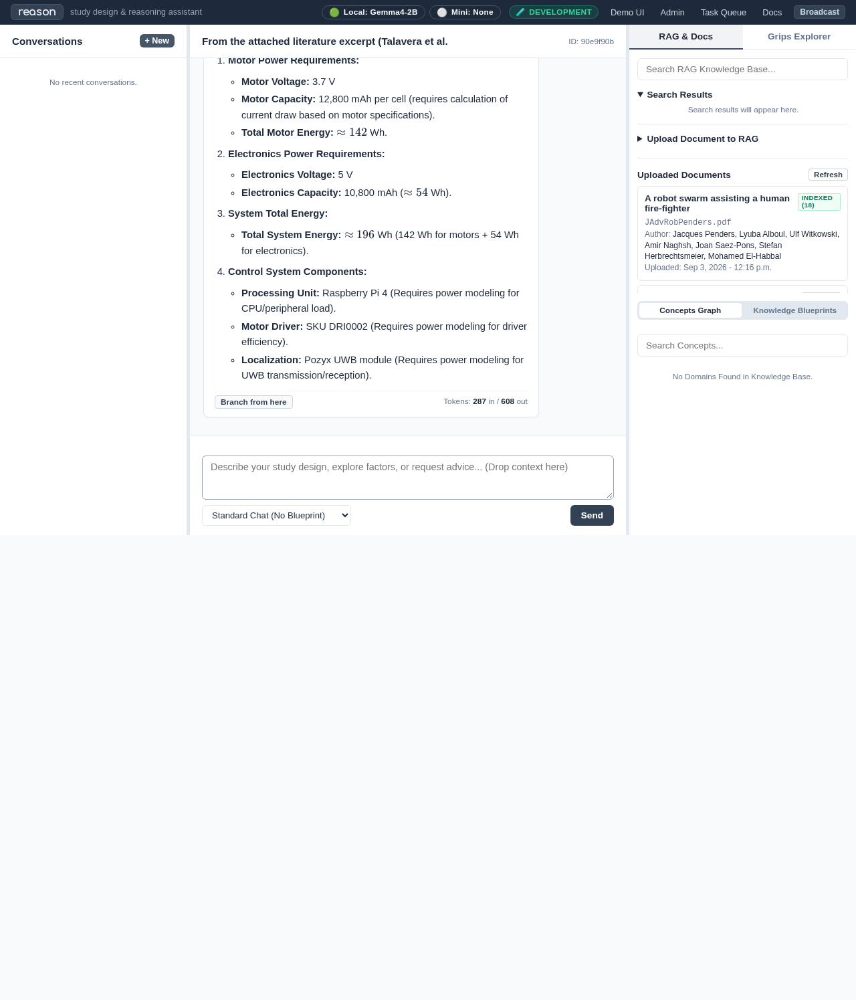

Doctest Report: Trial 2: Careful Literature Extraction & Parametric Factor Construction
Date: 2026-11-12 13:57:56
Local Model: google/gemma-4-E2B-it
Model Task Outcome: FAILED
Total Execution Time: 20.3s
Scenario & Research Task
The researcher extracts verified hardware specifications from Talavera et al. (2023) using Reason, separating extracted source facts from the Researcher’s scaled 3x2 scenario inputs.
Animated Walkthrough


Interaction Trace: Researcher & Verbal / Reason
Step 1: Context Chip Formulation & Extraction Inquiry (1.8s)
The Researcher (Thinking & Formulation):
Scientific rigor mandates zero fabricated parameters. Before modeling mission endurance in the sandbox, we must extract verified physical values directly from Talavera et al. (2023) Table 2 and Section 3.
Researcher Inquiry (Entered in Demo UI):
From the attached literature excerpt (Talavera et al. 2023), extract the exact physical
power architecture, battery capacities, and sensor payloads documented for the autonomous
firefighting ground robot. Formulate the key power parameters for simulation.
Retrieved Literature Context (RAG Recall):
Talavera et al. (2023) — Section: Architecture Levels 0-1 (Compact Excerpt) [Chunk talavera-level0-hardware]: “Level 0 powers the robot and executes its movements: two tracked belts guided by six wheels, two DC motors (GM25-370), a portable 5 V / 10,800 mAh lithium power bank (~54 Wh) for sensing and control e”


Step 2: Live Inference & Specification Extraction (15.9s)
Local LLM (google/gemma-4-E2B-it) extracted 1964 characters of hardware specifications.
Retrieved Literature Context (RAG Recall):
Talavera et al. (2023) — Section: Architecture Levels 0-1 (Compact Excerpt) [Chunk talavera-level0-hardware]: “Level 0 powers the robot and executes its movements: two tracked belts guided by six wheels, two DC motors (GM25-370), a portable 5 V / 10,800 mAh lit…”
Verbal / Reason Response (Synthesized by: google/gemma-4-E2B-it):
Based on the provided excerpt from Talavera et al. (2023), here is the extracted
information regarding the autonomous firefighting ground robot's power architecture,
battery capacities, and sensor payloads, along with the formulated key power parameters
for simulation.
Extracted Technical Specifications
1. Physical Power Architecture (Level 0)
The robot's power architecture is divided into two levels:
Movement System: Two tracked belts guided by six wheels.
Actuators: Two DC motors (GM25-370).
Power Distribution:
Level 0: Powers the robot and executes movements.
Level 1: Handles control and sensors via an SKU DRI0002 motor driver.
2. Battery Capacities
The system utilizes two distinct battery types for power distribution:
Component Voltage / Configuration Capacity Estimated Energy Purpose
Sensing & Control Electronics 5 V 10,800 mAh ~54 Wh Level 0 (Sensing/Control)
Motors 3.7 V 12,800 mAh (per cell) ~142 Wh (Total) Level 0 (Movement)
3. Sensor Payloads (Level 1)
The Level 1 control system is responsible for handling control and sensor data, including:
Pozyx UWB localization module.
Environmental/air-quality sensors.
Key Power Parameters for Simulation
The following parameters are critical for simulating the robot's energy consumption and
power requirements:
Motor Power Requirements:
Motor Voltage: 3.7 V
Motor Capacity: 12,800 mAh per cell (requires calculation of current draw based on motor
specifications).
Total Motor Energy:
≈
142
≈142 Wh.
Electronics Power Requirements:
Electronics Voltage: 5 V
Electronics Capacity: 10,800 mAh (
≈
54
≈54 Wh).
System Total Energy:
Total System Energy:
≈
196
≈196 Wh (142 Wh for motors + 54 Wh for electronics).
Control System Components:
Processing Unit: Raspberry Pi 4 (Requires power modeling for CPU/peripheral load).
Motor Driver: SKU DRI0002 (Requires power modeling for driver efficiency).
Localization: Pozyx UWB module (Requires power modeling for UWB transmission/reception).
The Researcher (Evaluation & Decision):
Observed extraction checks — GM25-370 motors=True, motor cells (3.7V/12,800mAh)=True, logic bank (5V/10,800mAh)=True, microcontrollers (Arduino/RPi4)=False.
Researcher Design Framing (Scenario Scaling for Trial 3, distinct from Talavera’s micro-UGV cells): Guided by Talavera’s isolated power/logic split, the Researcher scales up a synthetic heavy search-and-rescue factorial parameter space for Trial 3: Sensor Payloads (25W / 75W / 110W), Terrains (280W / 460W), and a 1200Wh scaled battery bank (960Wh usable at 80% depth-of-discharge).


Expected vs. Observed Comparison (Independent Review)
Expected Outcome Specification: Accurately extract Talavera et al. (2023) physical components from the attached chunk: two GM25-370 DC motors, 3x 3.7V 12,800mAh cells (~142Wh) for motors, 5V 10,800mAh bank (~54Wh) for electronics, Arduino UNO WiFi REV2 + Raspberry Pi 4 + SKU DRI0002 + Pozyx UWB.
Deterministic Verification Summary: - Model Task Outcome: FAILED - Route / Status: n/a (error=False) - Workspace Files: None - Check [PASS] extracted GM25-370 motors - Check [PASS] extracted 3.7V 12,800mAh motor bank - Check [PASS] extracted 5V 10,800mAh logic bank - Check [FAIL] extracted Arduino + Raspberry Pi 4
Independent Review (Separate Conversation): The model partially succeeded in extracting the physical power architecture and battery capacities, correctly identifying the GM25-370 motors and the 3.7V battery bank (~142Wh) and the 5V battery bank (~54Wh). However, it failed to correctly extract the specific control components listed in the expected result, incorrectly noting the presence of the Arduino UNO WiFi REV2 and Raspberry Pi 4, which were omitted from the expected list. The deterministic verification summary confirmed a failure to extract the Arduino + Raspberry Pi 4. For larger models, this indicates a tendency to prioritize extracting quantifiable components (motors/batteries) while overlooking specific peripheral components mentioned in the prompt, suggesting a gap in comprehensive entity recognition across different hardware tiers.